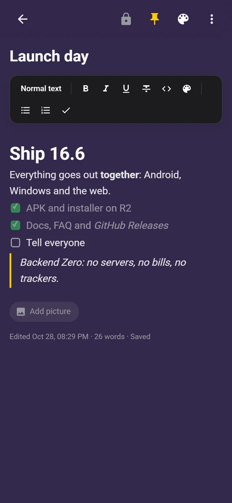
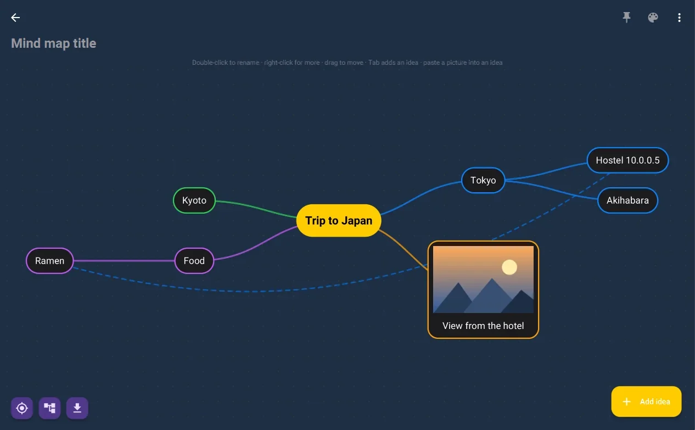

Text, as it looks
Bold is bold, a heading is big, and no symbol is ever on screen — like Word, but saved as plain Markdown.
v16.6 live · Android · Windows · Web
Notes without limits. Synced across your universe.
Text that looks the way it reads, checklists, journals, infinite mind maps, sketches and recordings — synced across Android, Windows and the web. Backend Zero: free, open source, no servers of its own. And behind a discreet gesture, dual zero-knowledge encrypted vaults.



The workspace
Works offline and without an account. Sign in to sync every device and share notes with people.
Bold is bold, a heading is big, and no symbol is ever on screen — like Word, but saved as plain Markdown.
Tick things off on your phone, watch them tick off on your desktop.
One page per day, kept in order, ready when you are.
Break free from paragraphs — connect ideas across an endless canvas, with pictures.
Vector diagrams with pressure-sensitive ink.
Capture a thought out loud, keep it with everything else.
02 — Backend Zero
There is no Notes+ API and no server code anywhere. Hosted for free, existing for free — and so free for everyone who uses it.
Static files on GitHub Pages, installable as a PWA, works fully offline.
Firebase Authentication.
Firebase Realtime Database, guarded by its security rules — the whole "backend" — over offline-first SQLite and Room on device.
Each user's own Google Drive.

03 — Hardened security
Behind an innocuous gesture lies an encrypted media safe and a covert chat — each with its own key, encrypted on the device with AES-256-GCM, auto-locking after a timeout, with encrypted backups.
Zero-knowledge by design: the lock is one only you know.
Free · open source · GPL-3.0
Android 7.0+, Windows 10/11 (Java built in), and the web on everything else — macOS, iPhone, iPad and Linux.